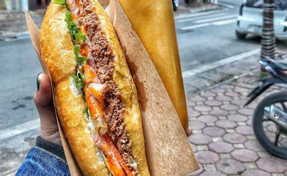

Banh mi

Banh mi
Banh mi is a Vietnamese sandwich
that's made with light, airy baguette bread and filled with savory (and sometimes spicy) ingredients, like pork, cucumbers, carrots, mayo, and sriracha.
It was created after the French left Vietnam in the 1950s and the Vietnamese people could enjoy French baguettes in their own way.
They added their own spin by layering on new ingredients, aside from pâté and cheese, like pickled vegetables and mayo.
Today it's a staple in Vietnamese cuisine and is quite versatile. You can easily switch out the proteins, veggies, and condiments.
We've rounded up our best banh mi recipes, complete with chicken, pork, and prawns, as well as some banh mi-inspired recipes like banh mi burgers and banh mi bowls.
Truly the hardest part about these recipes is choosing which one you want to make tonight.